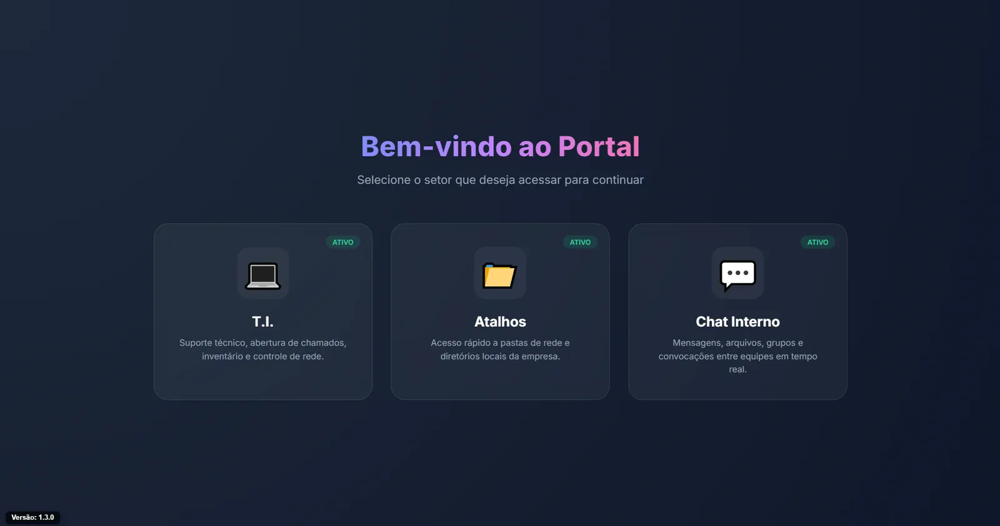
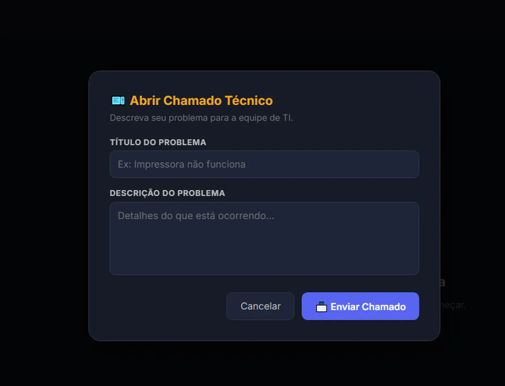
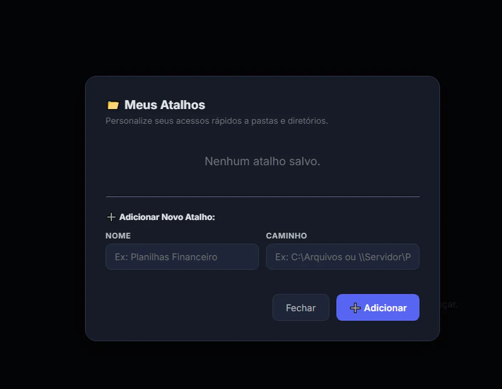
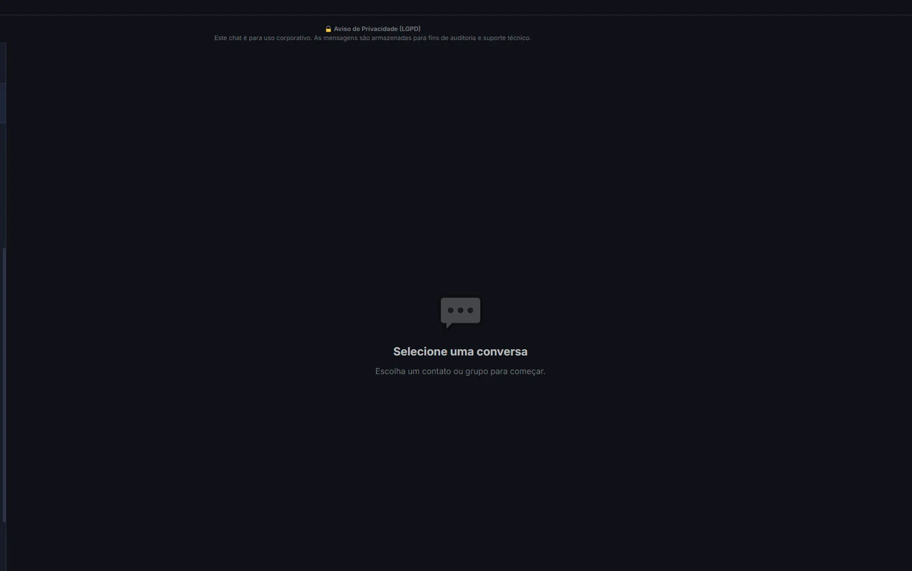

Problem
Requests, equipment information and access details were spread across messages, emails and spreadsheets, making history difficult to maintain.
INTERNAL IT AND SUPPORT
INTERNAL USETickets, assets, access and communication
I built HelpDesk to bring IT requests, assets, access management, chat and history into a simple interface for non-technical users.

APPLICATION SCREENS



Internal use
The operating version is used by 11 people for tickets, asset consultation, access management and communication.
Privacy
Credentials, user data, internal addresses and infrastructure settings are not part of the publication.
Requests, equipment information and access details were spread across messages, emails and spreadsheets, making history difficult to maintain.
Tickets, priorities, categories, history, assets, software, certificates, maintenance, access, shortcuts, chat and desktop notifications.
A Flask and SQLAlchemy backend, real-time communication through Socket.IO and an Electron client. The system can use SQLite or PostgreSQL and provides Ollama/local retrieval as optional features.
Technical state
The core system works without AI. Ollama, Redis and advanced retrieval remain optional and environment-dependent.
Next evolutions
Split the main file into blueprints and services, adopt complete migrations, strengthen the permission matrix and move attachments to object storage.
I plan to move HelpDesk capabilities gradually into Portal's IT module while preserving history and access rules.